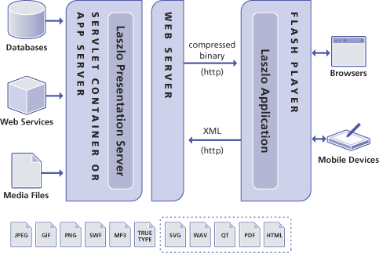
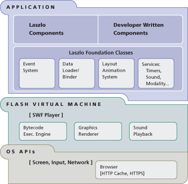

Laszlo Presentation Server, LPS, is a platform for rich Internet applications that are easy to develop and deploy. The Laszlo system architecture combines the power and usability of client/server design with the administrative advantages and cost effectiveness of web applications.
LPS is a Java application that executes in a J2EE servlet
container. LPS may communicate with
In the Laszlo context, client means LZX application executing in user's web browser, and server means LPS (which may, in turn, communicate with other servers). The LZX client and LPS server communicate over HTTP; LPS sends byte code and the LZX application sends XML.
All Laszlo platform features, including streaming media and notification, are delivered over HTTP or HTTPS. Laszlo-based applications thus maintain compatibility with standard corporate firewalls. This is a critical capability for public Internet applications.
The Laszlo Presentation Server executes within a standard J2EE application server or Java servlet container running JRE 1.3 or higher. These application server environments scale well, as does LPS itself. Laszlo applications can run on any OS supported by these server products. Laszlo supports Windows, Solaris, Linux and Mac OS X server environments.
The Laszlo Presentation Server consists of five main subsystems:
The
The LZX tag and script compilers convert Laszlo application description tags and JavaScript into executable (swf) bytecode for transmission to the Laszlo client environment. This code is placed into the cache, from which it is sent to the client. Depending on how the application is invoked, it is transmitted either as a .swf file, or as an HTML file with an embedded .swf object.
The Media Transcoder converts a full range of media assets into a single format for rendering by Laszlo's target client rendering engine. This enables a Laszlo application to present supported media types in a unified manner on a single canvas, without the distraction of multiple helper applications or supplemental playback software.
The Media Transcoder automatically transcodes the following media types: JPEG, GIF, PNG, MP3, TrueType, and SWF (art/animation only).
The Data Manager is comprised of a data compiler that converts all data into a compressed binary format readable by Laszlo applications and a series of data connectors that enable Laszlo applications to retrieve data via XML/HTTP. Laszlo applications can thus interface across the network with databases, XML Web Services, and Web-server based files or executables.
The Persistent Connection Manager handles authentication and real-time messaging for Laszlo applications which require them. It provides real-time messaging and notification or data push over HTTP.
The cache contains the most recently compiled version of any application. The first time a Laszlo application is requested, it is compiled and the resultant SWF file is sent to the client. A copy is also cached on the server, so that subsequent requests do not require waiting for the compilation.
Laszlo's client architecture consists of the Laszlo Foundation Classes, a core library compiled into every Laszlo application that provides run-time services (such as, for example, a timer and an idling function) and a presentation renderer to provide 2D graphics rendering and sound playback. None of these classes rely on Flash services or use the Flash object model. The Flash player is used solely as a rendering engine.
When this application is running, even though it isn't "doing anything," nevertheless it is maintaining a connection with the server, and all the capabilities necessary for running an LZX application have actually been downloaded.
There are four primary components within the Laszlo Foundation Classes: the Event System, the Data Loader/Binder, the Layout & Animation system and a set of Application Services.
The event system recognizes and handles application events such as user mouse clicks or server data pushes. This component permits standard event-based programming on the client. Relative to conventional Web implementations, Laszlo applications typically reduce the processing load placed on the host server, by enabling tasks such as client-side sorting, processing, validation, and dynamic display across all application states.
The data loader serves as a data traffic director, accepting data streams across the network from the Presentation Server and binding data to appropriate visual display elements such as text fields, forms, and menu items.
The layout and animation system provides Laszlo applications with
The Laszlo runtime includes support for timers, sound and modal dialogs.
This example uses a Laszlo application stored on the Laszlo
Presentation Server as weather.lzx. The following diagram
illustrates how this application would be executed by the Laszlo
Presentation Server.
Starting with a user's entering a URL that requests the Weather application, this diagram illustrates the data flow sequence from client to server, integrating data from an XML Web service, and sending the result back to the client.
In Laszlo applications, presentation-related logic is separated from business logic and executed locally on the client. The Laszlo server sends the client compressed binary data rather than text, reducing the amount of data transported in comparison to HTML-based and other Web applications. Caching on both the server and client eliminates unnecessary code execution and data transmission.
The Laszlo application platform supports the SSL security model. Laszlo data transmissions across the Internet can be encrypted using SSL encryption over HTTPS. Laszlo applications execute on the client computer within the secure "sandbox" environment of the Flash Player, and cannot write to the local file system or access the client's native environment.
Web services and databases used by a Laszlo application are also secured using a per-user authentication model. This mechanism prevents use of the Laszlo Presentation Server as a proxy or gateway into insecure services or data.
The Laszlo architecture is designed to support multiple device types. Its dynamic layout mechanisms enable simple modifications to such properties as an application's overall size to be intelligently applied by the platform. This simplifies adapting an application to work on screens and devices of different size.
All screen visualizations in Laszlo use time-based rather than frame-based animation, and thus transparently accommodate the processor speed differences of various device types. An interface transition specified to take 500 milliseconds will take 500 milliseconds regardless of the number of frames shown — faster processors result in more frames and smoother animation, but the same duration of transition.